修改记录总清单（索引）
记录总数：7 项
视觉标杆：成果申报（数据概览 + 筛选胶囊 + 独立卡片 + FAB）
核心规范：统一 3D 卡通医生头像、统一 16px 卡片边距、禁用裸文字表格
| 序号 | 模块与改动主题（点击跳转） | 端别 | 定位 / 触发路径 | 涉及文件与留痕形式 |
|---|---|---|---|---|
| 01 | 个人中心首页 · 视觉重构与布局对齐 | 移动端 | 移动端（教师/学员）→ 底部「我的」Tab | 移动端/shared/tdesign-app.js/css · 图文对比（3 张） |
| 02 | 成果申报 · 视觉规范标杆与全屏新建流程 设计标杆 | 移动端 | 移动端学员端 → 我的 → 成果申报 | 移动端/shared/tdesign-app.js/css · 图文对比（4 张） |
| 03 | 我的证书 · 视觉全面对齐成果申报规范 | 移动端 | 移动端（教师/学员）→ 我的 → 我的证书 | shared/js/self-profile.js、self-profile.css · 图文对比（3 张） |
| 04 | 学员档案 / 教师档案 · 移动端卡片化与栏目切换 | 移动端 | 移动端（教师/学员）→ 我的 → 学员档案 / 教师档案 | shared/js/self-profile.js、self-profile.css · 图文对比（3 张） |
| 05 | 我的教师画像 · 视觉重构与全屏弹窗适配 | 移动端 | 移动端教师端 → 我的 → 我的教师画像 | shared/js/self-profile.js、self-profile.css · 图文对比（4 张） |
| 06 | 资质与成果 · 列表卡片化与冗余标题收口 | 移动端 | 移动端教师端 → 我的 → 资质与成果 | shared/js/self-profile.js、self-profile.css · 留痕截图（1 张） |
| 07 | 多角色切换与管理端个人中心适配 | 移动端 | 移动端 → 我的 → 当前身份 / 切换角色；管理端中心 | 移动端/shared/admin-tdesign-app.js 等 · 留痕截图（3 张） |
个人中心首页 · 视觉重构与布局对齐
修改前 · 存在问题
- 头像降级：头像退化为文字单字蓝圆「王」，缺失全站统一的 3D 卡通形象。
- 图标缺失：服务列表项左侧轻量图标被全部误删，退化为枯燥纯文本。
- 排版脱节：顶部身份卡片与下层服务列表左右 padding 不一致，出现错位；背景与卡片边界模糊。
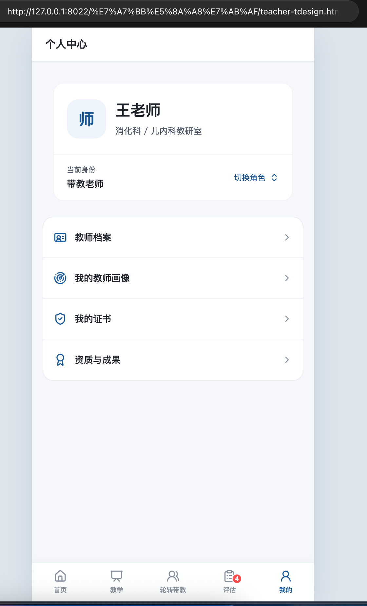
修改后 · 改动说明
- 统一 3D 卡通头像：引入 3D 医生头像（`avatar_03.png` 教师 / `avatar_05.png` 学员），配搭浅蓝渐变柔和微阴影。
- 恢复彩色分类图标：服务项左侧补回 44×44px pastel 柔和圆角图标（蓝/紫/橙/绿），右侧配对状态胶囊与浅灰 Chevron `>`。
- 严格统一对齐：整页所有卡片统一 16px 左右外边距、14px 圆角、纯白背景与 `rgba(0,82,217,0.08)` 超轻细边框。
- 右上角通知铃铛：右上角补齐标准消息铃铛（带未读红点），信息架构完整。
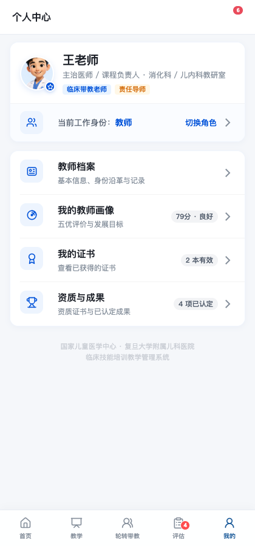
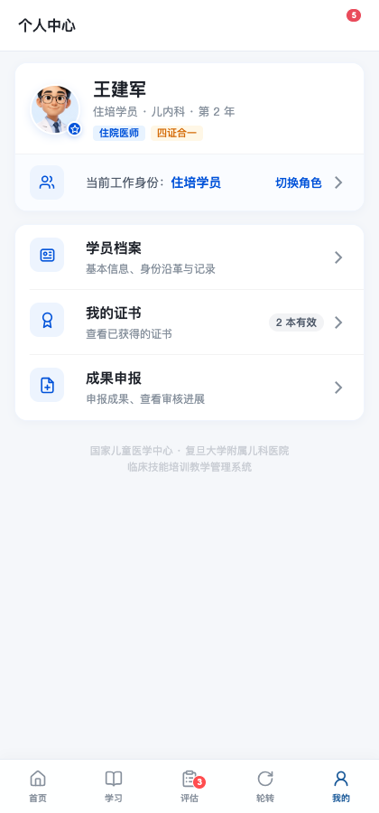
成果申报 · 视觉规范标杆与全屏新建流程 设计标杆
修改前 · 存在问题
- 无数据概览：顶部缺少状态分布与快捷筛选，申报进度无法一目了然。
- 列表缺乏层次：旧表单未做卡片化，字段平铺拥挤。
- 退出无确认：新建申报若误触返回，已填写内容直接丢失，缺少留存提示。
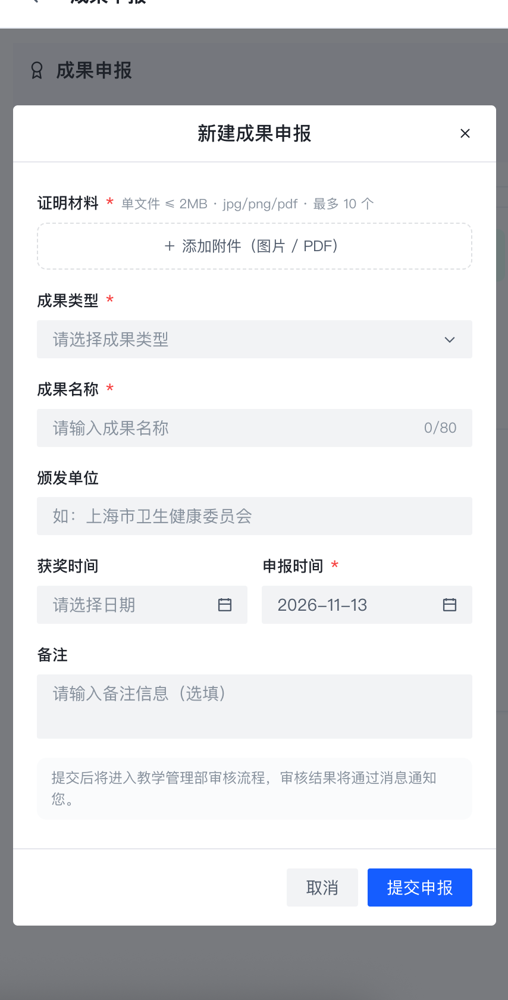
修改后 · 改动说明
- 分段数据概览：顶部设计 4 列统计栏（全部 3、待审核 1、已通过 1、不予通过 1），激活态呈柔和浅蓝胶囊。
- 分类筛选胶囊：提供横向轻量筛选 Pill（全部类型、资格证书、竞赛获奖、教学课题、国家版权）。
- 卡片化列表：44×44px pastel 分类图标、加粗标题、元数据行与右侧审核状态标签（待审核/已通过/不予通过）。
- 深蓝 FAB 悬浮按钮：右下角提供品牌蓝悬浮新建按钮（`+`），点击滑入全屏新建表单。
- 就地表单校验与退出确认：字段必填即时标红，退出弹窗二次确认保护草稿。
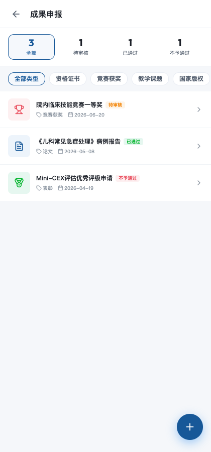
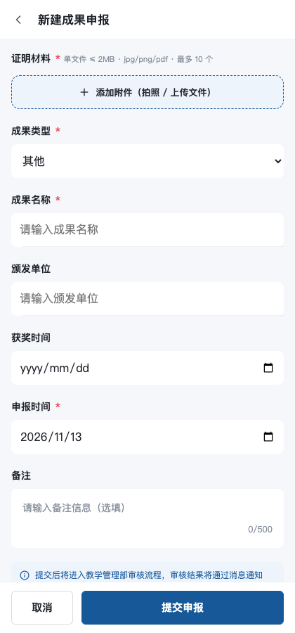
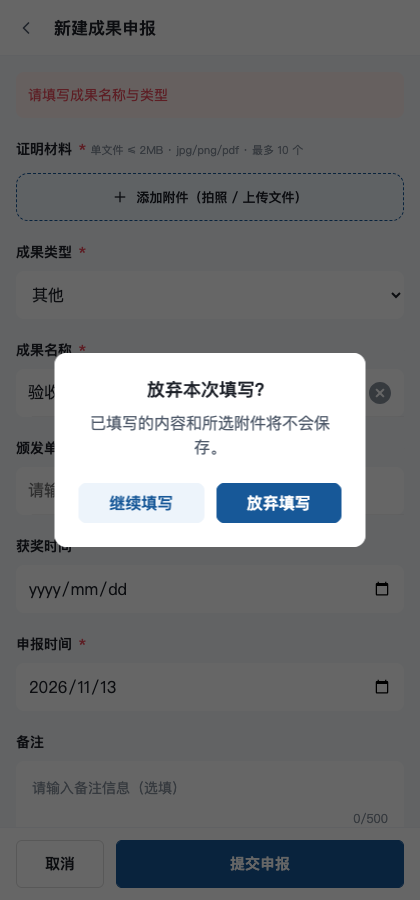
我的证书 · 视觉全面对齐成果申报规范
修改前 · 存在问题
- 平铺大表格：直接继承桌面版大表格，无卡片感与数据概览，在竖屏手机上极度粗糙。
- 状态标签重叠：已过期、已作废证书内同时渲染两套 Arco 标签与文本，排版凌乱。
- 缺少移动交互规范：未提供卡片点击动效、缺少右侧 Chevron `>` 引导，证书详情弹窗未适配全屏。
（改前直接沿用未适配的 PC 大平铺视图，无移动端卡片规范）
修改后 · 改动说明
- 引入 4 列数据概览卡片：完全对齐「成果申报」规范，顶部展示「全部 5 · 有效 3 · 已过期 1 · 已作废 1」分段数据卡。
- 年份分组轻量胶囊：以浅灰优雅圆角胶囊呈现「2026 年度」「2025 年度」时间线分界。
- 高品质证书卡片：14px 圆角纯白卡片，左侧 44×44px 缎带奖章图标（有效浅蓝、过期浅灰、撤销浅粉），右侧独立状态胶囊（绿色「有效」、灰色「已过期」）与 Chevron `>`。
- 全屏证书查看：点击卡片平滑滑入全屏证书详情页，优雅呈现证书原件与结构化发证元数据。

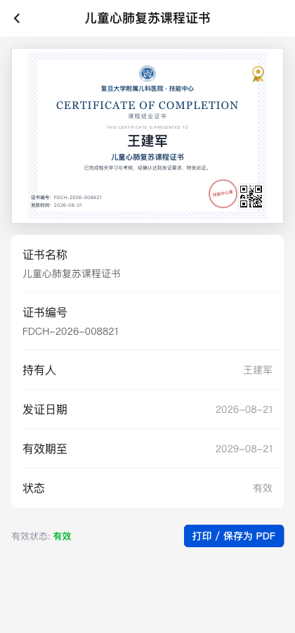
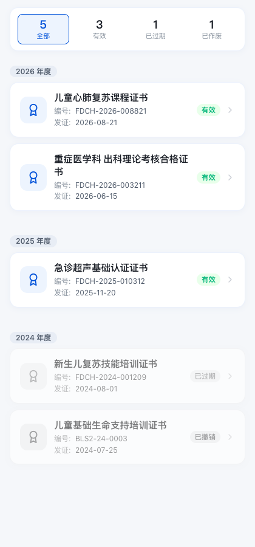
学员档案 / 教师档案 · 移动端卡片化与栏目切换
修改前 · 存在问题
- 桌面平铺长表格：直接暴露 PC 端多列表格与侧边栏，横向严重撑开溢出，无法在手机端正常阅览。
- 缺少个人名片：顶部仅有单调小字标题，无头像、档案编号与账号状态。
- 信息无收敛：基本信息、身份沿革、历程全部单页堆叠，无分栏筛选机制。
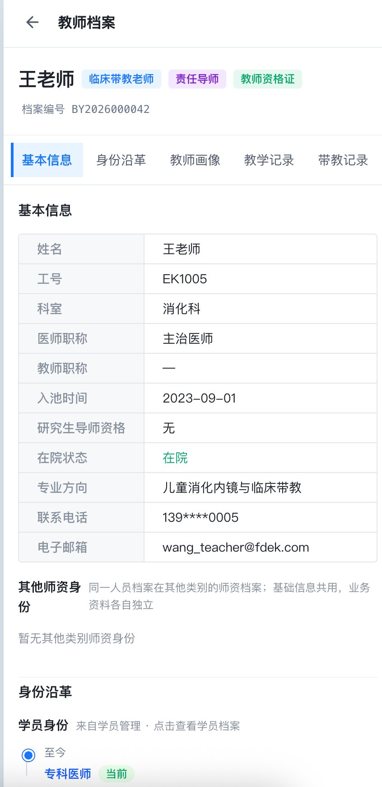
修改后 · 改动说明
- 医生专属英雄名片：顶部 16px 圆角纯白卡片，嵌入 3D 卡通医生头像、加粗大名、身份徽章、档案编号与绿色「账号已开通」指示点。
- TDesign 滑动栏目 Tabs：平滑横滑切换「基本信息」「身份沿革」「教学/轮转记录」「资质与成果」等独立栏目。
- 键值对卡片化：基本信息转换为 14px 圆角纯白卡片，清晰的键（灰色）值（深色）层次与浅色分割线。
- 表格行响应式转卡片：身份沿革、轮转历程等数据行自动映射为独立卡片，首列加粗作为卡片标题，字段名自动转为卡片行标签，彻底根除横向滚动。
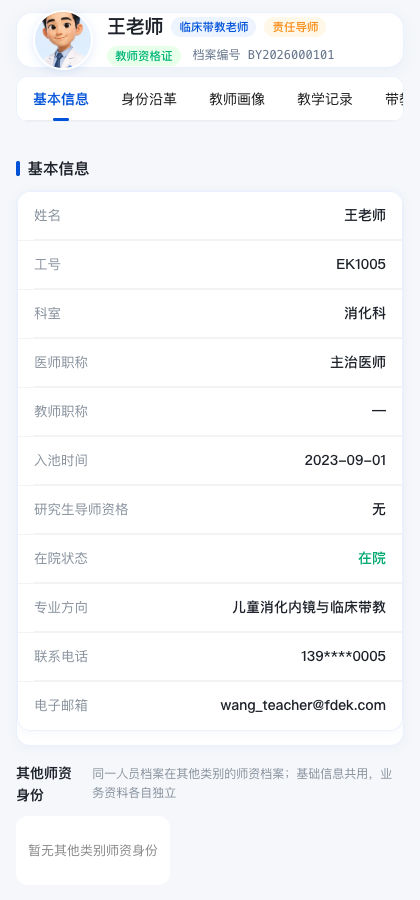
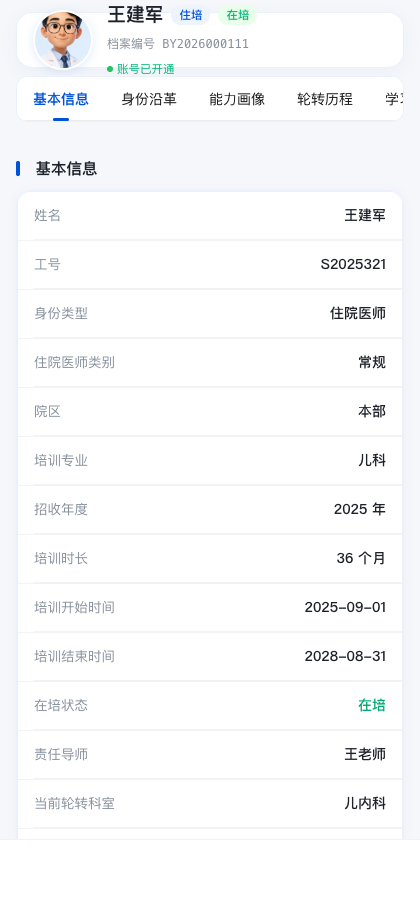
我的教师画像 · 视觉重构与全屏弹窗适配
修改前 · 存在问题
- 工具栏折行重叠：顶部三个操作按钮文字超长且带 PC 副标题，在移动端强行折行甚至覆盖头像。
- 头像粗糙：仅渲染单字「王」圆圈，缺少教师职业感。
- 综合评分布局凌乱：五优综合评分、雷达图与各项数据在手机端排列松散，缺乏卡片聚合感。
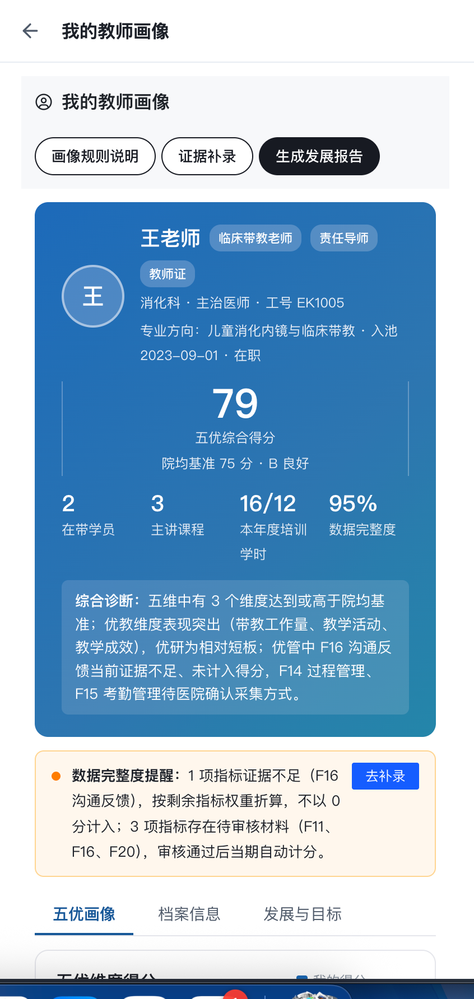
修改后 · 改动说明
- 紧凑操作栏：隐藏 PC 端副标题，将「画像规则说明」「证据补录」「生成发展报告」收束为 1/3 等分的紧凑胶囊按钮栏，绝不折行。
- 3D 教师卡通头像：58px 双层纯白边框圆形容器，优雅展示 3D 教师形象与职称、工号信息。
- 79 分综合评分英雄卡：浅蓝渐变背景，大号加粗 36px 得分，搭配紫色「院均基准 75 分 · B 良好」基准线胶囊与 4 列教学 KPI 矩阵。
- 证据补录与报告全屏化：补录材料全屏滑入，支持真实附件上传、移除与本地待提交暂存校验。
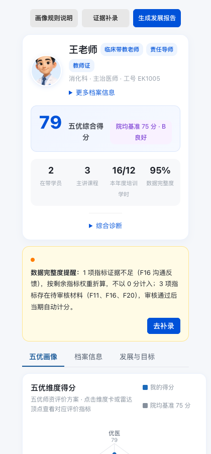
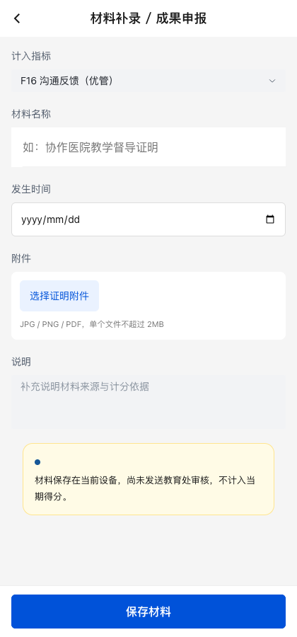
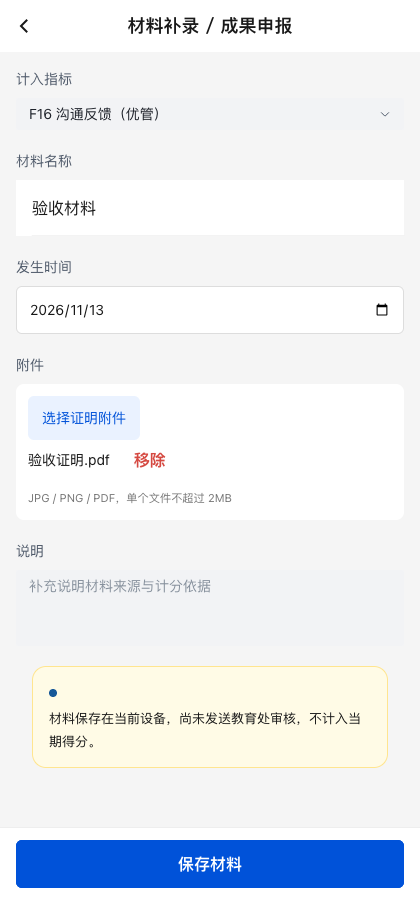
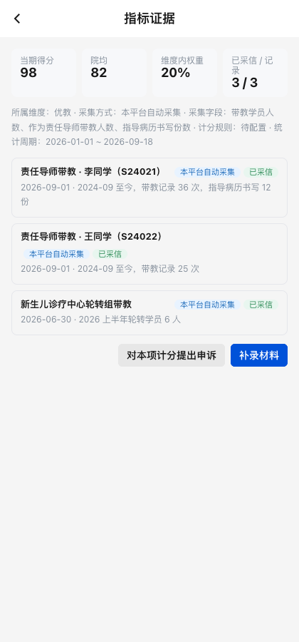
资质与成果 · 列表卡片化与冗余标题收口
修改前 · 存在问题
- 标题重复显示：同时出现「| 资质与成果」与「资质证书 共 4 项」，排版冗余。
- 列表缺乏卡片感：资质证书条目以未经移动优化的列表平铺，附件链接与生效日期杂糅。
（改前直接沿用未适配的 PC 大平铺视图）
修改后 · 改动说明
- 移除重复标题：收口为单个带品牌蓝竖条的清晰分类栏目，顶部保留 3D 医生名片卡片。
- 条目全面卡片化：14px 圆角纯白卡片，清晰展示证书全称、类别徽章、蓝色附件查看链接与发证日期。
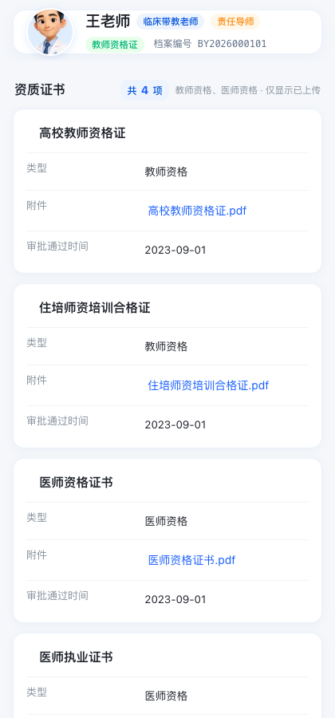
多角色切换与管理端个人中心适配
修改前 · 存在问题
- 角色混杂：一人多身份时无法直观预览和即时切换工作视角。
- 管理端个人中心缺失：科室主任、教务管理员登录移动端时中心布局错乱。
（改前管理角色无规范个人中心适配）
修改后 · 改动说明
- 角色切换半屏抽屉：底部 ActionSheet 列出用户当前具备的所有系统身份（规培生、专培生、临床带教老师、责任导师、管理员），勾选即平滑切换。
- 管理端全套适配：管理员端「我的」同步适配 TDesign 视觉规范与安全权限说明。
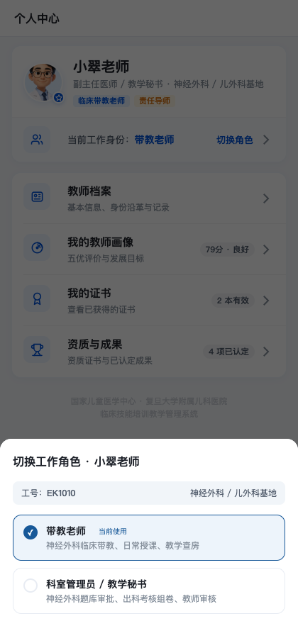
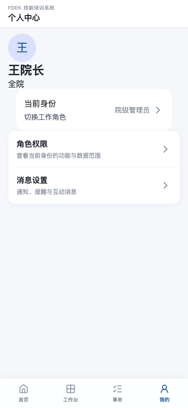
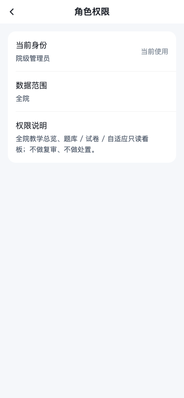